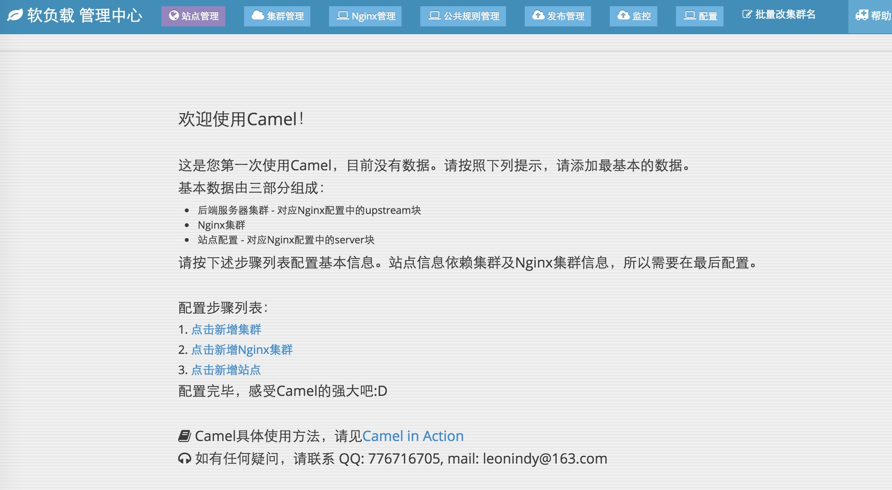

2.2 部署管理端
camel-admin是一个Java EE项目，可以通过接口及页面两种方式对Nginx集群进行发布、重启、监控等操作。
2.1.1 建立数据库
camel-admin有两部分信息需要持久化：
站点、集群等信息
对于站点和集群，我们统一抽象了一个模型-SlbModelTree。为了使用方便，该模型存储到NoSQL的MongoDB中，省去模型结构变更导致表结构变更的烦恼。
发布记录
发布即为一次更新Nginx配置文件并使配置文件生效的操作。发布状态、日志等信息存储到MySQL中。
为此，部署管理端之前需要配置数据库：
MySQL:
安装MySQL后，建立一个专门的数据库，然后执行建表SQL，SQL文件在：camel/camel-admin/src/main/resources/init-data/create_table.sql。
建好表后，再建立MySQL配置文件，存储数据库信息。camel-admin在启动时会读取该文件，获取数据库的配置。项目附带一个sample：camel/camel-admin/src/main/resources/init-data/jdbc-mysql.properties，请复制sample至路径/data/appdatas/camel/jdbc-mysql.properties，并按照实际的数据库环境更改此配置文件。
Camel对MySQL的操作为写多读少，不建议开启主从同步。
MongoDB：
NoSQL非常便捷，无需建表。在搭建好MongoDB、建立好库之后，请复制sample(camel/camel-admin/src/main/resources/init-data/mongo.properties)至路径/data/appdatas/camel/mongo.properties，并按照实际的MongoDB环境更改此配置文件。
MongoDB支持主从读写分离。在实际使用过程中，我们遇到了MongoDB主从复制过慢，导致发布状态不一致的情况。建议MongoDB为单点。
MongoDB中存放着所有的负载配置信息。由于camel会点的历存放每个站史版本，建议MongoDB的容量尽可能大。由于负载信息比较重要，也建议定时crontab mongodump，定期备份MongoDB。
我们使用MongoDB 3.0.7。
2.1.2 本地部署Dengine
camel-admin在发布配置信息之前，会本地nginx -t检验配置语法是否通过。由于linux与mac环境不一致，建议在本地开发时，关闭检查功能。在线上环境时，开启此检查功能。关闭检查功能后，本地不需要安装Dengine。
检查开关是可配置的，请复制配置sample(camel/camel-admin/src/main/resources/init-data/camel.properties)至路径/data/appdatas/camel/camel.properties，对配置项local.nginx.config.check进行更改。当该配置项置为false时，发布不进行Nginx配置检查。如果是线上环境，请将此配置项设置为true。
如果打开了配置检查功能，需要在本机部署Dengine。部署Dengine请参考下一章节“部署Dengine”。
2.1.3 编译
camel-admin引用了一个非常强大的maven插件：unidal。该插件绑定了maven的compile生命周期，在mvn compile时生成Java pojo类。camel内部使用的复杂模型，均是由该插件生成的。
请进入camel-admin目录，执行mvn clean compile。执行完毕后，unidal插件在camel/camel-admin/target/generated-sources/dal-model目录，会生成Java模型。如果使用intellij，请切记将此目录标记为Generated Sources Root目录，标注该文件夹中包含java文件，以防出现ClassNotFound的错误。
在maven compile时找不到unidal或者xwork的依赖？ camel使用了unidal codegen插件。该插件已部署在maven中心仓库中，但不一定部署在其它maven仓库里(如没有部署在开源中国OSChina的maven仓库中)。为此，camel内置了依赖仓库和插件仓库，在项目内部寻找依赖。 如果你在maven配置settings.xml中设置了全局镜像，则内置仓库会失效。此时请把镜像的匹配范围更改至某个仓库，而不要全局覆盖。
camel-admin使用jdk1.6以上的版本，camel-agent使用jdk1.7以上的版本。如果您想在同一台服务器上运行camel-admin及camel-agent，建议安装jdk1.7
2.1.4 运行
准备工作都已经做好，下面就是运行这个Java EE项目了。可以直接通过IDE运行，也可打包成war包，放入到web容器中运行。
如果食用Maven，请追加参数-Dmaven.test.skip=true，略过测试。
需要注意的是，由于管理端会在发布时对配置进行检测，需要以root权限运行nginx -t命令，为此请在visudo中将运行camel-admin的用户加入sudoer中，并设置为sudo无需密码。如：
liyang ALL=(ALL) NOPASSWD: ALL
如果成功运行，会看到：  请按照第三章 使用指南进行配置。